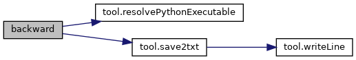
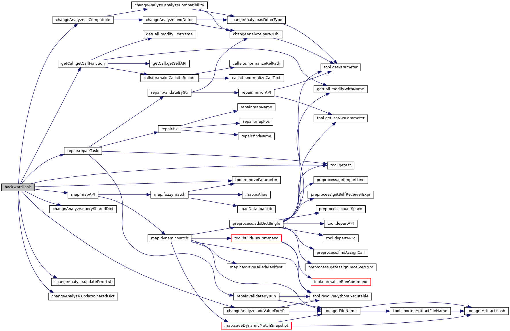
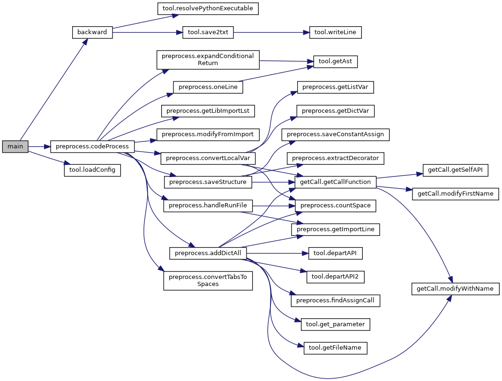

Functions | |
| def | backward (projPath, libName, currentVersion, currentEnv, targetVersion, targetEnv, runCommand, runPath) |
| Generate pkl files and perform detection and repair task 生�项目调用API的pkl文件以�执行检测�修�任务 More... | |
| def | backwardTask (args) |
| One process handles one file 一个进程处�一个文件 More... | |
| def | main () |
| Main function of PCART PCART主函数 More... | |
Function Documentation
◆ backward()
| def main.backward | ( | projPath, | |
| libName, | |||
| currentVersion, | |||
| currentEnv, | |||
| targetVersion, | |||
| targetEnv, | |||
| runCommand, | |||
| runPath | |||
| ) |
Generate pkl files and perform detection and repair task 生�项目调用API的pkl文件以�执行检测�修�任务
- Parameters
-
projPath The path to the project libName The upgraded Python third-party library name currentVersion The upgraded lib's current version currentEnv Current version's virtual environment targetVersion The upgraded lib's target version targetEnv Target version's virtual environment runCommand The run command of the project runPath The relative path of the run file
Definition at line 162 of file main.py.
162 def backward(projPath,libName,currentVersion,currentEnv,targetVersion,targetEnv,runCommand,runPath):
192 # createResult=subprocess.run(command,shell=True,executable='/bin/bash',stdout=subprocess.PIPE,stderr=subprocess.PIPE,text=True)
193 createResult = subprocess.run(command, shell=True, stdout=subprocess.PIPE, stderr=subprocess.PIPE, text=True)
212 #è¿™é‡Œç”¨è¿›ç¨‹æ± å�Œæ—¶å¤„ç�†å¤šä¸ªä»»åŠ¡ï¼Œä½†å¯¹äº�torch库å�¯èƒ½ä¼šæŠ¥é”™RuntimeError:CUDA out or memory
227 tasks=[(projName,libName,file,currentVersion,currentEnv,targetVersion,targetEnv,runCommand,runPath,lock,sharedDict,coverSet) for file in filePath]
231 pool.join() #ç‰å¾…è¿›ç¨‹æ± ä¸æ‰€æœ‰çš„任务执行完，å�¦åˆ™ä¸»è¿›ç¨‹å�¯èƒ½ç»§ç»å¾€ä¸‹æ‰§è¡Œæ��å‰�结æ�Ÿï¼Œè€Œå¯¼è‡´éƒ¨åˆ†ä»»åŠ¡æ²¡æœ‰æ‰§è¡Œå®Œ
def backward(projPath, libName, currentVersion, currentEnv, targetVersion, targetEnv, runCommand, runPath)
Generate pkl files and perform detection and repair task 生�项目调用API的pkl文件以�执行检测�修�任...
Definition: main.py:162
def save2txt(lst, libName, runCommand, savePath)
Save PCART report ä¿�å˜PCART报告
Definition: tool.py:459
Here is the call graph for this function:

Here is the caller graph for this function:

◆ backwardTask()
| def main.backwardTask | ( | args | ) |
One process handles one file 一个进程处�一个文件
- Parameters
-
args Input parameters for processing one project file
- Returns
- (ansDict,fileRelativePath,invokedAPINum) ansDict: API parameter compatibility issue detection and repair results; fileRelativePath: The detected and repaired project file; invokedAPINum: The number of invoked APIs
Definition at line 33 of file main.py.
35 projName,libName,file,currentVersion,currentEnv,targetVersion,targetEnv,runCommand,runPath,lock,sharedDict,coverSet=args
68 # if not os.path.exists(f"Copy/pkl/{pklName}") and f"{fileName}##{lineNum}##{callAPI}".replace(' ','') not in coverSet:
69 #有些API虽然有pkl但å®�际上是ä¸�它å�Œå��的其它APIçš„pkl，å�³å®ƒå¹¶æ²¡æœ‰è¢«çœŸæ£è¦†ç›–
90 matchDict=querySharedDict(callAPI,sharedDict) #当查询�作�生在更新�作之�，�能会查询失败
95 currentMatch=mapAPI(callAPI,runCommand,runPath,formatAPI,projName,libName,copyFile,currentVersion,currentEnv,lock,errLst)
96 targetMatch=mapAPI(callAPI,runCommand,runPath,formatAPI,projName,libName,copyFile,targetVersion,targetEnv,lock,errLst,curr=0)
101 ansDict[key][f"Definition @{currentVersion} <{currentMatch['matchMethod']}>"]=str(currentMatch['match'])
102 ansDict[key][f"Definition @{targetVersion} <{targetMatch['matchMethod']}>"]=str(targetMatch['match'])
118 apiWithValue=addValueForAPI(callAPI,projName,runPath,runCommand,currentEnv,targetEnv,errLst) #apiWithValueä¸ºç©ºè¡¨ç¤ºæ·»åŠ å�‚数失败
119 fixedAPI,compatibilityLabel,repairStatus=repairTask(root,callAPI,apiWithValue,projName,runPath,runCommand,repairLst,targetEnv,errLst)
def removeParameter(s, flag=0)
Remove parameter(s) from API call string å�»æ�‰APIä¸çš„å�‚数部分
Definition: tool.py:150
def addValueForAPI(callAPI, projName, runPath, runCommand, currentEnv, targetEnv, errLst)
Add values stored by pkl file for API parameters 为APIå�‚æ•°æ·»åŠ ä¿�å˜è‡³pkl文件ä¸çš„值 ...
Definition: changeAnalyze.py:630
def mapAPI(callAPI, runCommand, runPath, formatAPI, projName, libName, copyFile, version, virtualEnv, lock, errLst, curr=1)
Construct the mapping between the invoked API and the lib API to obtain its signature 建立invoked API...
Definition: map.py:241
def backwardTask(args)
One process handles one file 一个进程处�一个文件
Definition: main.py:33
def isCompatible(current, target)
Detemine the compatibility of APIs from current and target versions 判æ–èµ·å§‹ç‰ˆæœ¬å’Œç›®æ ‡ç‰ˆæœ¬API的兼容性...
Definition: changeAnalyze.py:549
def updateErrorLst(errorLog, errorLst)
Save error messages ä¿�å˜é”™è¯¯ä¿¡æ�¯
Definition: changeAnalyze.py:94
def repairTask(root, callAPI, apiWithValue, projName, runPath, runCommand, repairLst, virtualEnv, errLst)
Task of repairing parameter compatibility issues �数兼容性问题修�任务
Definition: repair.py:372
def querySharedDict(callAPI, sharedDict)
Query API mapping dictionary 查询APIæ˜ å°„å—å…¸
Definition: changeAnalyze.py:108
def updateSharedDict(callAPI, currentDict, targetDict, sharedDict)
Update API mapping dictionary: add and revise æ›´æ–°APIæ˜ å°„å—å…¸: æ·»åŠ å’Œä¿®æ”¹
Definition: changeAnalyze.py:125
def getCallFunction(filePath, libName)
Extract all API calls from a given .py file æ¯�æ¬¡ä¼ è¿›æ�¥ä¸€ä¸ª.py文件，抽å�–所有的调用API.
Definition: getCall.py:176
Here is the call graph for this function:

◆ main()
| def main.main | ( | ) |
Main function of PCART PCART主函数
Definition at line 240 of file main.py.
249 projPath,runCommand,runPath,libName,currentVersion,targetVersion,currentEnv,targetEnv=loadConfig(f'Configure/{config}')
def backward(projPath, libName, currentVersion, currentEnv, targetVersion, targetEnv, runCommand, runPath)
Generate pkl files and perform detection and repair task 生�项目调用API的pkl文件以�执行检测�修�任...
Definition: main.py:162
def loadConfig(configPath)
Load PCART's configuration file åŠ è½½PCARTé…�置文件
Definition: tool.py:552
def codeProcess(projPath, runCommand, runPath, libName)
Code processing 代ç �预处ç�†
Definition: preprocess.py:1073
Here is the call graph for this function:
